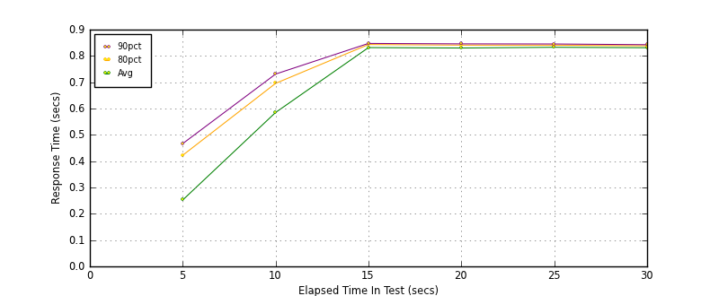
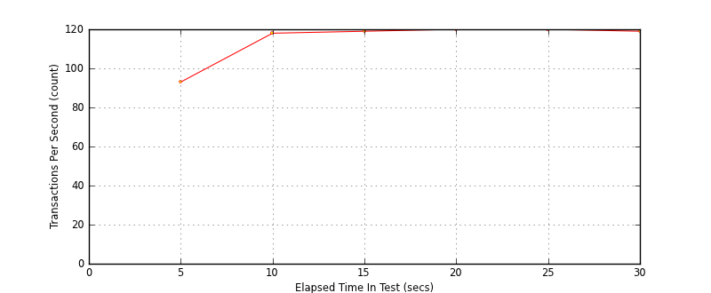
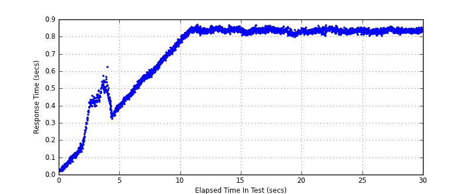

Performance Results Report
Summary
transactions: 3559
errors: 0
run time: 30 secs
rampup: 10 secs
test start: 2014-02-04 11:05:10
test finish: 2014-02-04 11:05:40
time-series interval: 5 secs
workload configuration:
| group name | threads | script name |
|---|
| user_group-1 | 100 | read_user.py |
All Transactions
Transaction Response Summary (secs)
| count | min | avg | 80pct | 90pct | 95pct | max | stdev |
|---|
| 3559 | 0.019 | 0.711 | 0.838 | 0.843 | 0.847 | 0.866 | 0.217 |
Interval Details (secs)
| interval | count | rate | min | avg | 80pct | 90pct | 95pct | max | stdev |
|---|
| 1 | 467 | 93.40 | 0.019 | 0.252 | 0.422 | 0.467 | 0.506 | 0.623 | 0.170 |
| 2 | 593 | 118.60 | 0.383 | 0.585 | 0.696 | 0.731 | 0.750 | 0.783 | 0.107 |
| 3 | 599 | 119.80 | 0.765 | 0.832 | 0.843 | 0.848 | 0.852 | 0.866 | 0.017 |
| 4 | 601 | 120.20 | 0.795 | 0.830 | 0.841 | 0.846 | 0.849 | 0.863 | 0.012 |
| 5 | 602 | 120.40 | 0.804 | 0.833 | 0.841 | 0.845 | 0.849 | 0.866 | 0.010 |
| 6 | 597 | 119.40 | 0.802 | 0.831 | 0.839 | 0.843 | 0.846 | 0.856 | 0.009 |
Graphs
Response Time: 5 sec time-series

Response Time: raw data (all points)
Throughput: 5 sec time-series

Custom Timer: get_tweets
Timer Summary (secs)
| count | min | avg | 80pct | 90pct | 95pct | max | stdev |
|---|
| 3459 | 0.019 | 0.711 | 0.838 | 0.843 | 0.847 | 0.866 | 0.217 |
Interval Details (secs)
| interval | count | rate | min | avg | 80pct | 90pct | 95pct | max | stdev |
|---|
| 1 | 467 | 93.40 | 0.019 | 0.252 | 0.422 | 0.467 | 0.506 | 0.623 | 0.170 |
| 2 | 593 | 118.60 | 0.383 | 0.585 | 0.696 | 0.731 | 0.750 | 0.783 | 0.107 |
| 3 | 599 | 119.80 | 0.765 | 0.832 | 0.843 | 0.847 | 0.851 | 0.866 | 0.017 |
| 4 | 601 | 120.20 | 0.795 | 0.830 | 0.841 | 0.846 | 0.849 | 0.863 | 0.012 |
| 5 | 602 | 120.40 | 0.804 | 0.833 | 0.841 | 0.845 | 0.849 | 0.866 | 0.010 |
| 6 | 597 | 119.40 | 0.801 | 0.831 | 0.838 | 0.843 | 0.846 | 0.856 | 0.009 |
Graphs
Response Time: 5 sec time-series
Response Time: raw data (all points)

Throughput: 5 sec time-series